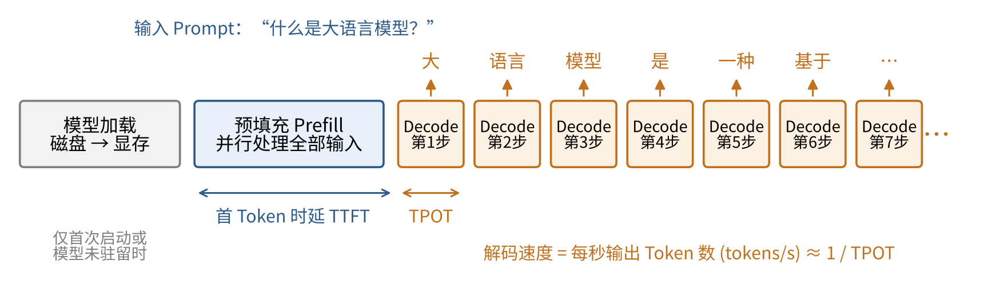
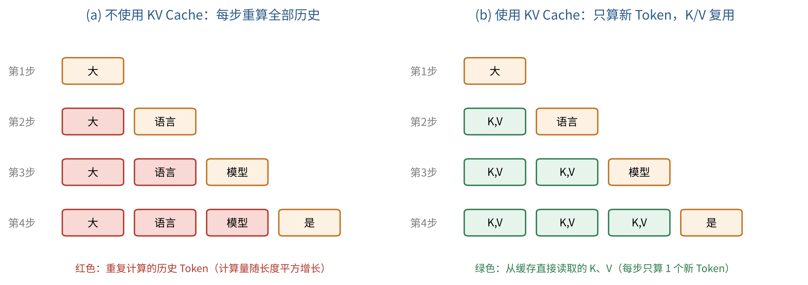
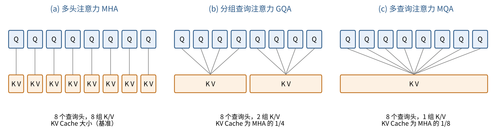
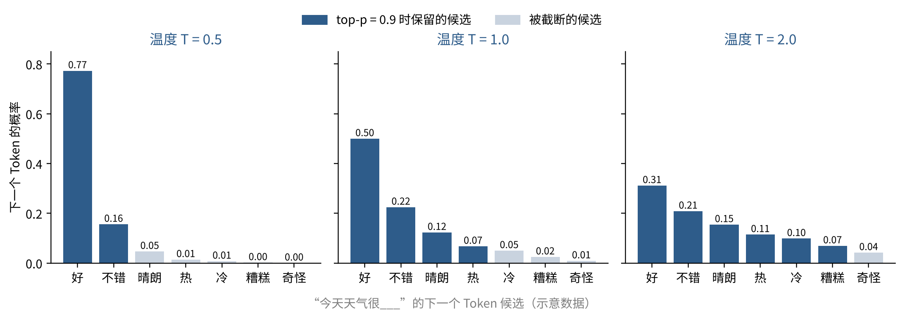

3.8 大语言模型推理原理
经过预训练、微调和对齐，我们终于得到了一个可用的模型。从本节开始，讨论生命周期的最后一个阶段：推理（Inference），即用训练好的模型根据输入生成输出。如 3.1.3 节所述，训练是改变模型参数的过程，而推理是在参数固定的前提下使用模型。 推理只有前向计算，看似比训练简单得多，但由于它要面对海量的用户请求、严格的响应时延和有限的硬件资源，同样有许多值得深入理解的原理。
3.8.1 自回归生成
与预训练目标式（3-1）相对应，大语言模型生成文本的方式是自回归的：每次根据输入和已经生成的内容，预测下一个 Token 的概率分布，从中选出一个 Token，把它接到序列末尾，再预测下一个……如此循环：
\(y_{t} \sim P_{\theta}\left( \cdot \mid \mathbf{x},\, y_{1},\ldots,y_{t - 1} \right),\quad\quad t = 1,2,\ldots\quad\) (3-38)
直到生成表示结束的特殊 Token，或者达到设定的最大输出长度为止。这里的”\(\sim\)“表示从分布中选出一个 Token，具体如何选择，由 3.8.6 节介绍的解码策略决定。
可以看出，回答有多少个 Token，模型就要做多少次前向计算，而且这些计算只能一个接一个地串行进行，因为第 \(t\) 个 Token 必须等前 \(t - 1\) 个 Token 生成之后才能计算。这正是大模型回答时”一个字一个字往外蹦”的原因，也是推理优化面临的核心约束。
3.8.2 一次推理请求的三个阶段
如图 3-18 所示，一次完整的推理请求可以分为三个阶段：
- 模型加载：在首次启动或模型尚未驻留内存时，把模型权重从磁盘读入显存；
- 预填充（Prefill）：集中处理全部输入 Prompt，为生成第一个 Token 做准备；
- 解码（Decode，也称生成阶段）：逐个生成后续 Token，直到回答结束。

图3-18 一次推理请求的三个阶段
模型加载发生在模型启动、切换模型，或模型已被系统卸载之后。推理引擎需要识别模型结构、读取权重文件，并为运行过程分配内存。根据模型大小、磁盘速度和框架设置，加载可能需要几秒到几十秒。例如，一个以 BF16 存储的 7B 模型约 14 GB，从读取速度约 3 GB/s 的固态硬盘加载，仅读取文件就需要约 5 秒。加载完成后，权重通常常驻显存（或苹果芯片等设备的统一内存），后续请求无需重复加载。
需要注意的是，“模型已经在内存中”并不意味着读取权重不再有开销。GPU 执行每一层计算时，仍要把该层的权重和缓存从显存读入计算单元。这段数据通路的速度主要受内存带宽和访问效率的影响，这一点在解码阶段尤为关键（见 3.8.5 节）。
3.8.3 关键概念：KV Cache
1．为什么需要 KV Cache
回顾自注意力的计算：对于第 \(t\) 个位置，模型用它的查询向量 \(\mathbf{q}_{t}\) 与所有历史位置的键向量 \(\mathbf{k}_{1},\ldots,\mathbf{k}_{t}\) 计算相关性，再按相关性对值向量 \(\mathbf{v}_{1},\ldots,\mathbf{v}_{t}\) 加权求和：
\(\mathbf{o}_{t} = \sum_{i = 1}^{t}{softmax}_{i}\left( \frac{\mathbf{q}_{t}^{\top}\mathbf{k}_{i}}{\sqrt{d_{k}}} \right)\mathbf{v}_{i}\quad\) (3-39)
也就是说，生成新 Token 时，模型需要通过注意力机制”回顾”前面的全部上下文，判断其中哪些信息与当前生成最相关。关键在于，由于因果掩码的存在，历史 Token 的 \(\mathbf{k}_{i}\) 和 \(\mathbf{v}_{i}\) 一旦算出就不会再改变。如果每生成一个新 Token 都把整个序列从头重新计算一遍（图 3-19(a)），大量计算都是重复的：生成 \(n\) 个 Token 需要处理的 Token 总数约为 \(1 + 2 + \cdots + n \approx n^{2}/2\)，随长度平方增长。
因此，推理框架会把每一层中历史 Token 的 K 和 V 保存在显存中，称为 KV Cache（键值缓存）。生成下一个 Token 时，只需为这个新 Token 计算 \(\mathbf{q}\)、\(\mathbf{k}\)、\(\mathbf{v}\)，再与缓存中历史 Token 的 K、V 做注意力计算即可（图 3-19(b)）。这样每一步只处理一个新 Token，避免了对历史 Token 的完整重算，大幅降低了解码阶段的计算量。

图3-19 KV Cache 的作用
KV Cache 在推理的两个阶段承担不同的任务：在预填充阶段，根据全部输入 Prompt，一次性建立初始的 KV Cache；在解码阶段，读取已有的 KV Cache，并把每个新 Token 的 K、V 追加进去。需要强调的是，KV Cache 保存的是注意力计算中可重复使用的中间结果，而不是现成的答案。
2．KV Cache 有多大
KV Cache 本质上是”用空间换时间”，它的大小不能只根据 Token 数量确定，还与模型层数、KV 头的数量、每个头的维度以及缓存精度有关：
\(M_{KV} = 2 \times L \times n_{kv} \times d_{head} \times s \times b \times p\quad\) (3-40)
其中，系数 2 表示 Key 和 Value 两部分，\(L\) 为层数，\(n_{kv}\) 为 KV 头的数量，\(d_{head}\) 为每个头的维度，\(s\) 为序列长度（输入加输出的 Token 数），\(b\) 为同时处理的请求数，\(p\) 为每个数值占用的字节数（FP16/BF16 为 2）。
例如，某 27B 级模型有 64 层、8 个 KV 头，每个头的维度为 128，KV Cache 使用 BF16 存储，则一个 2000 Token 的请求所需的缓存约为
\[2 \times 64 \times 8 \times 128 \times 2000 \times 2 \approx 5.24 \times 10^{8}\ \text{字节} \approx 0.5\ \text{GB}\]
3．分组查询注意力：给 KV Cache “瘦身”
在标准的多头注意力（Multi-Head Attention，MHA）中，每个查询头都有自己独立的一组 K、V，KV 头数等于注意力头数。为了减小 KV Cache，研究者提出了让多个查询头共享同一组 K、V 的方法（图 3-20）：所有查询头共享一组 K、V，称为多查询注意力（Multi-Query Attention，MQA）；把查询头分成若干组，每组共享一组 K、V，称为分组查询注意力（Grouped-Query Attention，GQA）。GQA 在模型效果和缓存大小之间取得了较好的平衡，LLaMA 2-70B、LLaMA 3、Qwen 等主流模型都采用了 GQA。

图3-20 多头注意力、分组查询注意力与多查询注意力
【例 3-5】 某 70B 模型（如 LLaMA 2-70B）有 80 层、64 个注意力头、每个头的维度为 128（隐藏层维度 8192），采用 GQA，共 8 个 KV 头。以 FP16 进行推理，同时服务 10 个用户，每个用户支持 32K（32768）Token 的上下文。估算推理所需的显存。
解：（1）模型权重：\(70 \times 10^{9} \times 2\ \text{字节} = 140\ \text{GB}\)。
（2）KV Cache：每个 Token 的缓存为 \(2 \times 80 \times 8 \times 128 \times 2 = 327680\) 字节，约 0.33 MB。10 个用户、每人 32768 个 Token，共
\[327680 \times 32768 \times 10 \approx 1.07 \times 10^{11}\ \text{字节} \approx 107\ \text{GB}\]
（3）此外还有激活值、临时张量和框架开销，通常按前两项之和的 10% 左右估算，约 25 GB。
总计约 \(140 + 107 + 25 \approx 272\) GB，需要 4 张 80 GB 显卡。
如果这个模型不使用 GQA，而是采用标准的多头注意力（64 个 KV 头），每个 Token 的缓存将增大 8 倍，KV Cache 达到约 859 GB，远远超过模型权重本身。这个例子说明了 GQA 的重要性：在长上下文、多用户的场景下，KV Cache 往往比模型权重占用更多显存。
【重点】长上下文不是免费的。 KV Cache 的大小与上下文长度和并发用户数都成正比：上下文越长，KV Cache 越大；同时服务的用户越多，KV Cache 也越大。一个模型”支持 128K 上下文”，并不意味着在你的显卡上能以 128K 的上下文同时服务很多用户。估算推理显存时，必须同时考虑模型权重和 KV Cache。
3.8.4 预填充阶段
预填充（Prefill）阶段集中处理全部输入 Token，计算它们在每一层的中间状态，建立初始的 KV Cache，并为生成第一个输出 Token 做准备。它有以下特点：
- 输入 Prompt 中的所有 Token 已知，可以高度并行地同时处理；
- 计算形态接近”矩阵乘矩阵”：一次读取的权重可以同时服务成百上千个输入 Token；
- 因此更容易充分发挥 GPU 的矩阵计算能力，通常是计算受限（Compute-bound）的；
- Prompt 越长，计算量越大，等待第一个 Token 的时间越明显。
预填充阶段的计算量约为每个输入 Token \(2N\) 次浮点运算（\(N\) 为参数量），即约 \(2Ns\) 次。例如，7B 模型处理 2000 Token 的 Prompt，约需 \(2 \times 7 \times 10^{9} \times 2000 = 2.8 \times 10^{13}\) 次运算；若 GPU 的有效算力为 100 TFLOPS，约需 0.28 秒。
衡量预填充阶段的关键指标有两个：
- 首 Token 时延（Time To First Token，TTFT）：从发出请求到看到模型开始输出第一个 Token 的时间，它直接决定了用户感受到的”反应速度”；
- 预填充速度：每秒处理的输入 Token 数，单位为 tokens/s，在一些推理工具中称为 prompt eval rate。
3.8.5 解码阶段
解码（Decode）阶段从第一个输出 Token 开始，逐个预测后续 Token，直到生成结束标记或达到最大输出长度。它的特点与预填充截然不同：
- 单个请求每一步通常只生成一个新 Token，但每生成一个 Token 都要完成一轮完整的前向计算；
- 计算形态接近”矩阵乘向量”：为了这一个 Token，GPU 必须把全部模型权重和不断增长的 KV Cache 从显存中读一遍；
- 单个请求的并行度很低，计算单元大部分时间在等待数据，因此解码通常是带宽受限（Memory-bandwidth-bound）的。
可以用一个简单的估算来理解这一点。解码时，每读取一个参数（FP16 下为 2 字节），只对它做一次乘法和一次加法，计算量与访存量之比约为 1 FLOP/字节；而现代 GPU 的算力与带宽之比高达数百 FLOP/字节（例如 H100 的 BF16 稠密算力约 989 TFLOPS，显存带宽约 3.35 TB/s，二者之比约 300）。这意味着在单个请求的解码过程中，GPU 的计算单元绝大部分时间是闲置的，速度的瓶颈在于”数据能多快地从显存送到计算单元”。由此可以得到单请求解码速度的一个理论上限：
\(\text{解码速度}\ \left( \text{tokens/s} \right) \lesssim \frac{\text{有效内存带宽}\ \left( \text{GB/s} \right)}{\text{每生成一个 Token 需读取的数据量}\ \left( \text{GB} \right)}\quad\) (3-41)
其中分母约等于模型权重的大小加上 KV Cache 的大小。例如，一个以 FP16 存储的 7B 模型约 14 GB，在显存带宽约 1 TB/s 的 RTX 4090 上，单请求解码速度的理论上限约为 \(1000/14 \approx 70\) tokens/s；如果把模型量化到 4 位（约 4 GB），上限就能提高到原来的三倍以上。这也解释了为什么量化不仅能让模型”放得下”，还能让模型”跑得快”。
衡量解码阶段的关键指标是：
- 每个输出 Token 的时延（Time Per Output Token，TPOT），即相邻两个输出 Token 之间的平均间隔；
- 解码速度：每秒生成的输出 Token 数（output tokens/s），约等于 \(1/TPOT\)。
一次请求的端到端时延可以表示为
\(T_{\text{总}} \approx TTFT + (n - 1) \times TPOT\quad\) (3-42)
其中 \(n\) 为输出的 Token 数。日常使用中，“半天不开口，但开口以后很快”，往往是 Prompt 很长、预填充耗时多（TTFT 大）；“马上开始回答，但一个字一个字很慢”，则往往是解码受限于内存带宽（TPOT 大）。
表 3-13 总结了预填充与解码两个阶段的差异。业界常用”预填充看算力，解码看带宽”来概括二者的瓶颈。
表3-13 预填充阶段与解码阶段的比较
| 比较维度 | 预填充（Prefill） | 解码（Decode） |
|---|---|---|
| 处理对象 | 全部输入 Token | 每步一个新 Token |
| 并行度 | 高，所有输入 Token 同时计算 | 低，逐 Token 串行 |
| 计算形态 | 矩阵乘矩阵 | 矩阵乘向量 |
| 主要瓶颈 | 计算能力（算力） | 内存带宽 |
| 对 KV Cache 的操作 | 一次性建立 | 读取并逐步追加 |
| 关键指标 | TTFT、预填充速度 | TPOT、输出 tokens/s |
| 用户感受 | “多久开始回答” | “回答得多快” |
由于解码阶段 GPU 算力大量闲置，一个自然的优化思路是：把多个用户的请求合并成一批（Batch）同时解码。 读一次权重就能同时为多个请求各生成一个 Token，从而成倍提高总吞吐量。批处理、PagedAttention、投机解码等推理优化技术将在 3.9 节详细讨论。
3.8.6 解码策略
模型每一步输出的是词表上的一个概率分布。“如何从这个分布中选出下一个 Token”，称为解码策略，它直接影响生成文本的质量和风格。
1．贪心解码与束搜索
贪心解码（Greedy Decoding）每一步都选概率最大的 Token：\(y_{t} = \arg\max_{y}P\left( y \mid \mathbf{x},y_{< t} \right)\)。它简单、结果确定，但每一步的局部最优并不保证整体最优，而且容易陷入重复。束搜索（Beam Search）每一步保留概率最高的 \(k\) 个候选序列（\(k\) 称为束宽），最后选出整体概率最高的序列，常用于机器翻译等有较明确标准答案的任务。但在开放式生成中，这两种确定性方法生成的文本往往平淡、重复，缺乏多样性。
2．温度采样
对话等开放式生成通常采用随机采样：按照概率分布随机抽取下一个 Token。设模型最后一层输出的未归一化分数（logits）为 \(z_{i}\)，引入温度（Temperature）参数 \(T\) 后，各 Token 的采样概率为
\(p_{i} = \frac{\exp\left( z_{i}/T \right)}{\sum_{j}^{}\exp\left( z_{j}/T \right)}\quad\) (3-43)
如图 3-21 所示，\(T < 1\) 时分布变得更”尖锐”，高概率 Token 更占优势，输出更保守、确定；\(T > 1\) 时分布变得更”平坦”，低概率 Token 的机会增加，输出更多样、更有创意，但也更容易出错；\(T \rightarrow 0\) 时等价于贪心解码。

图3-21 温度对概率分布的影响，以及 top-p 截断
3．top-k 与 top-p 采样
纯随机采样有可能抽到概率极低、明显不合理的 Token。为此，通常先对候选范围进行截断，再在剩余候选中重新归一化并采样：
- top-k 采样：只保留概率最高的 \(k\) 个 Token。它的问题是 \(k\) 固定，不能适应分布的形状：分布很集中时，\(k\) 个候选中可能混入不合理的选项；分布很分散时，又可能截掉合理的选项。
- top-p 采样（也称核采样，Nucleus Sampling）：把 Token 按概率从高到低排序，保留累积概率刚好达到阈值 \(p\) 的最小集合 \(V^{(p)}\)：
\(V^{(p)} = \arg\min_{V\prime}|V\prime|,\quad\quad\text{满足}\ \sum_{y \in V\prime}^{}P\left( y \mid \mathbf{x},y_{< t} \right) \geq p\quad\) (3-44)
候选集合的大小随分布自适应变化：模型很确定时只保留一两个候选，不确定时则保留更多。在图 3-21 中，\(T = 0.5\) 时 top-p（\(p = 0.9\)）只保留了 2 个候选，而 \(T = 2.0\) 时保留了 6 个。
此外，常用的控制手段还有重复惩罚（降低已出现过的 Token 的概率，避免车轱辘话），以及最大输出长度和停止词等。表 3-14 给出了不同任务下解码参数设置的一般经验。
表3-14 不同任务下解码参数的一般经验
| 任务类型 | 推荐策略 | 典型设置 | 原因 |
|---|---|---|---|
| 数学、代码、信息抽取 | 贪心或低温采样 | \(T = 0\)～0.3 | 需要确定、准确的结果 |
| 日常问答、对话 | 适中温度 + top-p | \(T \approx 0.7\)，\(p \approx 0.9\) | 兼顾准确性与自然度 |
| 创意写作、头脑风暴 | 较高温度 + top-p | \(T \approx 0.9\)～1.2，\(p \approx 0.95\) | 需要多样性和新意 |
| 机器翻译 | 束搜索 | 束宽 4～5 | 有较明确的最优译文 |
【小结】 大模型推理是自回归的：先用预填充并行地”读题”并建立 KV Cache，再用解码逐 Token 地”作答”。KV Cache 用显存换取了计算量的大幅下降，但也让显存占用随上下文长度和并发数快速增长；预填充主要受算力限制，决定首 Token 时延；解码主要受内存带宽限制，决定生成速度。解码策略则决定了在每一步”选哪个 Token”。理解这些原理，是下一节学习各种推理优化技术的基础。